에너지관리기사 (2018-09-15 기출문제)
1과목: 연소공학
1. 연돌에서의 배기가스 분석 결과 CO2 14.2%, O2 4.5%, CO 0% 일 때 탄산가스의 최대량[CO2]max(%)는?
- 10.5
- 15.5
- 18.0
- 20.5
(정답률: 63%)

2. 순수한 CH4를 건조 공기로 연소시키고 난 기체 화합물을 응축기로 보내 수증기를 제거시킨 다음, 나머지 기체를 Orsat법으로 분석한 결과, 부피비로 CO2가 8.21%, CO가 0.41%, O2가 5.02%, N2가 86.36%이었다. CH4 1kg-mol 당 약 몇 kg-mol 의 건조공기가 필요한가?
- 7.3
- 8.5
- 10.3
- 12.1
(정답률: 35%)
3. 표준 상태에서 고위발열량과 저위발열량의 차이는?
- 80 cal/mol
- 539 cal/mol
- 9200 cal/mol
- 9702 cal/mol
(정답률: 54%)
4. 로터리 버너를 장시간 사용하였더니 노벽에 카본이 많이 붙어 있었다. 다음 중 주된 원인은?
- 공기비가 너무 컸다.
- 화염이 닿는 곳이 있었다.
- 연소실 온도가 너무 높았다.
- 중유의 예열 온도가 너무 높았다.
(정답률: 81%)
5. 내화재로 만든 화구에서 공기와 가스를 따로 연소실에 송입하여 연소시키는 방식으로 대형가마에 적합한 가스연료 연소장치는?
- 방사형 버너
- 포트형 버너
- 선회형 버너
- 건타입형 버너
(정답률: 71%)
6. 다음 중 기상폭발에 해당되지 않는 것은?
- 가스폭발
- 분무폭발
- 분진폭발
- 수증기폭발
(정답률: 67%)
7. 부탄가스의 폭발 하한값은 1.8 Vol%이다. 크기가 10m×20m×3m 인 실내에서 부탄의 질량이 최소 약 몇 kg일 대 폭발할 수 있는가? (단, 실내 온도는 25℃이다.)
- 24.1
- 26.1
- 28.5
- 30.5
(정답률: 45%)
8. 연소기의 배기가스 연도에 댐퍼를 부착하는 이유로 가장 거리가 먼 것은?
- 통풍력을 조절한다.
- 과잉공기를 조절한다.
- 배기가스의 흐름을 차단한다.
- 주연도, 부연도가 있는 경우에는 가스의 흐름을 바꾼다.
(정답률: 74%)
9. 다음 중 습한 함진가스에 가장 적절하지 않은 집진장치는?
- 사이클론
- 멀티클론
- 스크러버
- 여과식 집진기
(정답률: 69%)
10. 경우의 1000L를 연소시킬 때 발생하는 탄소량은 약 몇 TC인가? (단, 경우의 석유환산계수는 0.92 TOE/kL, 탄소배출계수는 0.837 TC/TOE이다.)
- 77
- 7.7
- 0.77
- 0.077
(정답률: 70%)
11. 공기비 1.3에서 메탄을 연소시킨 경우 단열연소온도는 약 몇 K인가? (단, 메탄의 저발열량은 49 MJ/kg, 배기가스의 평균비열은 1.29 kJ/kgㆍK이고 고온에서의 열분해는 무시하고, 연소 전 온도는 25℃이다.)
- 1663
- 1932
- 1965
- 2230
(정답률: 43%)
12. 다음 기체연료에 대한 설명 중 틀린 것은?
- 고온연소에 의한 국부가열의 염려가 크다.
- 연소조절 및 점화, 소화가 용이하다.
- 연료의 예열이 쉽고 전열효율이 좋다.
- 적은 공기로 완전 연소시킬 수 있으며 연소효율이 높다.
(정답률: 73%)
13. 체적이 0.3m3인 용기 안에 메탄(CH4)과 공기 혼합물이 들어있다. 공기는 메탄을 연소시키는데 필요한 이론 공기량보다 20% 더 들어 있고, 연소 전 용기의 압력은 300 kPa, 온도는 90℃이다. 연소 전 용기 안에 있는 메탄의 질량은 약 몇 g인가?
- 27.6
- 33.7
- 38.4
- 42.1
(정답률: 26%)
14. 가스버너로 연료가스를 연소시키면서 가스의 유출속도를 점차 빠르게 하였다. 이때 어떤 현상이 발생하겠는가?
- 불꽃이 엉클어지면서 짧아진다.
- 불꽃이 엉클어지면서 길어진다.
- 불꽃형태는 변함없으나 밝아진다.
- 별다른 변화를 찾기 힘들다.
(정답률: 80%)
15. 다음과 같이 조성된 발생로 내 가스를 15%의 과잉공기로 완전 연소시켰을 때 건연소가스량(Sm3/Sm3)은? (단, 발생로 가스의 조성은 CO 31.3%, CH4 2.4%, H2 6.3%, CO2 0.7%, N2 59.3%이다.)
- 1.99
- 2.54
- 2.87
- 3.01
(정답률: 28%)
16. 다음 액체 연료 중 비중이 가장 낮은 것은?
- 중유
- 등유
- 경유
- 가솔린
(정답률: 76%)
17. 프로판가스(C3H8) 1Nm3을 완전연소시키는 데 필요한 이론공기량은 약 몇 Nm3인가?
- 23.8
- 11.9
- 9.52
- 5
(정답률: 60%)
18. 다음 석탄류 중 연료비가 가장 높은 것은?
- 갈탄
- 무연탄
- 흑갈탄
- 반역청탄
(정답률: 70%)
19. 탄소 1kg의 연소에 소요되는 공기량은 약 몇 Nm3인가?
- 5.0
- 7.0
- 9.0
- 11.0
(정답률: 58%)
20. 석탄을 완전 연소시키기 위하여 필요한 조건에 대한 설명 중 틀린 것은?
- 공기를 예열한다.
- 통풍력을 좋게 한다.
- 연료를 착화온도 이하로 유지한다.
- 공기를 적당하게 보내 피연물과 잘 접촉시킨다.
(정답률: 82%)
2과목: 열역학
21. 비열이 일정한 이상기체 1kg에 대하여 다음 중 옳은 식은? (단, P는 압력, V는 체적, T는 온도, CP는 정압비열, CV는 정적비열, U는 내부에너지이다.)
- △U = CP×△T
- △U = CP×△V
- △U = CV×△T
- △U = CV×△P
(정답률: 62%)
22. 증기터빈에서 증기 유량이 1.1kg/s이고, 터빈입구와 출구의 엔탈피는 각각 3100kJ/kg, 2300kJ/kg이다. 증기 속도는 입구에서 15m/s, 출구에서는 60m/s이고, 이 터빈의 축 출력이 800kW일 때 터빈과 주위 사이에서 발생하는 열전달량은?
- 주위로 78.1kW의 열을 방출한다.
- 주위로 95.8kW의 열을 방출한다.
- 주위로 124.9kW의 열을 방출한다.
- 주위로 168.4kW의 열을 방출한다.
(정답률: 41%)
23. 피스톤이 설치된 실린더에 압력 0.3MPa, 체적 0.8m3인 습증기 4kg이 들어있다. 압력이 일정한 상태에서 가열하여 습증기의 건도가 0.9가 되었을 때 수증기에 의한 일은 몇 kJ인가? (단, 0.3MPa에서 비체적은 포화액이 0.001m3/kg, 건포화증기가 0.60m3/kg이다.)
- 2⑤.5
- 237.2
- 3⑤.5
- 408.1
(정답률: 27%)
24. 제1종 영구기관이 실현 불가능한 것과 관계있는 열역학 법칙은?
- 열역학 제0법칙
- 열역학 제1법칙
- 열역학 제2법칙
- 열역학 제3법칙
(정답률: 65%)
25. 열펌프(heat pump)의 성능계수에 대한 설명으로 옳은 것은?
- 냉동 사이클의 성능계수와 같다.
- 가해준 일에 의해 발생한 저온체에서 흡수한 열량과의 비이다.
- 가해준 일에 의해 발생한 고온체에 방출한 열량과의 비이다.
- 열 펌프의 성능계수는 1보다 작다.
(정답률: 67%)
26. 다음 그림은 Otto cycle을 기반으로 작동하는 실제 내연기관에서 나타나는 압력(P)-부피(V)선도이다. 다음 중 이 사이클에서 일(work) 생산과정에 해당하는 것은?
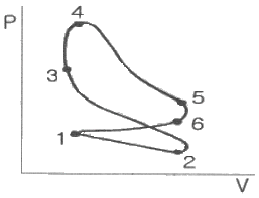
- 2 → 3
- 3 → 4
- 4 → 5
- 5 → 6
(정답률: 64%)
27. 증기압축 냉동사이클에서 증발기 입ㆍ출구에서의 냉매의 엔탈피는 각각 29.2, 306.8kcal/kg이다. 1시간에 1냉동 톤당의 냉매순환량(kg/(hㆍRT))은 얼마인가? (단, 1냉동톤(RT)은 3320kcal/h이다.)
- 15.04
- 11.96
- 13.85
- 18.06
(정답률: 54%)
28. 다음 중 냉매가 구비해야할 조건으로 옳지 않은 것은?
- 비체적이 클 것
- 비열비가 작을 것
- 임계점(critical point)이 높을 것
- 액화하기가 쉬울 것
(정답률: 63%)
29. 400K로 유지되는 항온조 내의 기체에 80kJ의 열이 공급되었을 때, 기체의 엔트로피 변화량은 몇 kJ/K인가?
- 0.01
- 0.03
- 0.2
- 0.3
(정답률: 62%)
30. 다음 그림은 어떤 사이클에 가장 가까운가? (단, T는 온도, S는 엔트로피이며, 사이클 순서는 A→B→C→D→E→F→A 순으로 작동한다.)
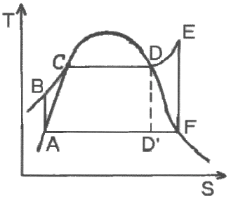
- 디젤 사이클
- 냉동 사이클
- 오토 사이클
- 랭킨 사이클
(정답률: 72%)
31. 건포화증기(dry saturated vapor)의 건도는 얼마인가?
- 0
- 0.5
- 0.7
- 1
(정답률: 69%)
32. 온도 127℃에서 포화수 엔탈피는 560kJ/kg, 포화증기의 엔탈피는 2720kJ/kg일 때 포화수 1kg이 포화증기로 변화하는 데 따르는 엔트로피의 증가는 몇 kJ/K인가?
- 1.4
- 5.4
- 9.8
- 21.4
(정답률: 53%)
33. 이상기체 상태식은 사용 조건이 극히 제한되어 있어서 이를 실제 조건에 적용하기 위한 여러 상태식이 개발되었다. 다음 중 실제 기체(real gas)에 대한 상태식에 속하지 않는 것은?
- 오일러(Euler) 상태식
- 비리얼(Virial) 상태식
- 반데르발스(van der Waals) 상태식
- 비티-브리지먼(Beattie-Bridgeman) 상태식
(정답률: 63%)
34. 어떤 압축기에 23℃의 공기 1.2kg이 들어있다. 이 압축기를 등온과정으로 하여 100kPa에서 800kPa까지 압축하고자 할 때 필요한 일은 약 몇 kJ인가? (단, 공기의 기체상수는 0.287kJ/(kgㆍK)이다.)
- 212
- 367
- 509
- 673
(정답률: 36%)
35. 어떤 기체의 정압비열(cp)이 다음 식으로 표현될 때 32℃와 800℃ 사이에서 이 기체의 평균정압비열(
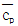
)은 약 몇 kJ/(kgㆍ℃)인가? (단, cp의 단위는 kJ/(kgㆍ℃)이고, T의 단위는 ℃이다.)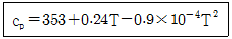
- 353
- 433
- 574
- 698
(정답률: 49%)
36. 그림과 같이 역 카르노사이클로 운전하는 냉동기의 성능계수(COP)는 약 얼마인가? (단, T1는 24℃, T2는 -6℃이다.)
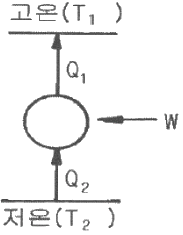
- 7.124
- 8.9⑤
- 10.048
- 12.845
(정답률: 60%)
37. 다음 4개의 물질에 대해 비열비가 거의 동일하다고 가정할 때, 동일한 온도 T에서 음속이 가장 큰 것은?
- Ar(평균분자량 : 40g/mol)
- 공기(평균분자량 : 29g/mol)
- CO(평균분자량 : 28g/mol)
- H2(평균분자량 : 2g/mol)
(정답률: 71%)
38. 카르노사이클에서 온도 T의 고열원으로부터 열량 Q를 흡수하고, 온도 T0의 저열원으로 열량 Q0를 방출할 때, 방출열량 Q0에 대한 식으로 옳은 것은? (단, ηc는 카르노사이클의 열효율이다.)
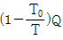
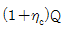
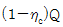
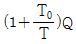
(정답률: 51%)
39. 0℃, 1기압(101.3kPa) 하에 공기 10m3가 있다. 이를 정압 조건으로 80℃까지 가열하는 데 필요한 열량은 약 몇 kJ인가? (단, 공기의 정압비열은 1.0kJ/(kgㆍK)이고, 정적비열은 0.71kJ/(kgㆍK)이며 공기의 분자량은 28.96kg/kmol이다.)
- 238
- 546
- 1033
- 2320
(정답률: 38%)
40. 보일러의 게이지 압력이 800kPa일 때 수은기압계가 측정한 대기 압력이 856mmHg를 지시했다면 보일러 내의 절대압력은 약 몇 kPa인가?
- 810
- 914
- 1320
- 1656
(정답률: 56%)
3과목: 계측방법
41. 다음 제어방식 중 잔류편차(off set)를 제거하여 응답시간이 가장 빠르며 진동이 제거되는 제어방식은?
- P
- I
- PI
- PID
(정답률: 67%)
42. 보일러 공기예열기의 공기유량을 측정하는 데 가장 적합한 유량계는?
- 면적식 유량계
- 차압식 유량계
- 열선식 유량계
- 용적식 유량계
(정답률: 47%)
43. 다음 유량계 종류 중에서 적산식 유량계는?
- 용적식 유량계
- 차압식 유량계
- 면적식 유량계
- 동압식 유량계
(정답률: 63%)
44. 다음 연소가스 중 미연소가스계로 측정 가능한 것은?
- CO
- CO2
- NH3
- CH4
(정답률: 61%)
45. 가스 크로마토그래피법에서 사용하는 검출기 중 수소염 이온화검출기를 의미하는 것은?
- ECD
- FID
- HCD
- FTD
(정답률: 77%)
46. 시즈(sheath) 열전대의 특징이 아닌 것은?
- 응답속도가 빠르다.
- 국부적인 온도측정에 적합하다.
- 피측온체의 온도저하 없이 측정할 수 있다.
- 매우 가늘어서 진동이 심한 곳에는 사용할 수 없다.
(정답률: 68%)
47. 전기 저항식 온도계 중 백금(Pt) 측온 저항체에 대한 설명으로 틀린 것은?
- 0℃에서 500Ω을 표준으로 한다.
- 측정온도는 최고 약 500℃ 정도이다.
- 저항온도계수는 작으나 안정성이 좋다.
- 온도 측정 시 시간 지연의 결점이 있다.
(정답률: 69%)
48. 스프링저울 등 측정량이 원인이 되어 그 직접적인 결과로 생기는 지시로부터 측정량을 구하는 방법으로 정밀도는 낮으나 조작이 간단한 것은?
- 영위법
- 치환법
- 편위법
- 보상법
(정답률: 57%)
49. -200~500℃의 측정범위를 가지며 측온저항체 소선으로 주로 사용되는 저항소자는?
- 구리선
- 백금선
- Ni선
- 서미스터
(정답률: 59%)
50. 저항식 습도계의 특징으로 틀린 것은?
- 저온도의 측정이 가능하다.
- 응답이 늦고 정도가 좋지 않다.
- 연속기록, 원격측정, 자동제어에 이용된다.
- 교류전압에 의하여 저항치를 측정하여 상대습도를 표시한다.
(정답률: 69%)
51. 다음 액주계에서 r, r1이 비중량을 표시할 때 압력(PX)을 구하는 식은?
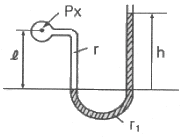
- PX = r1h+rℓ
- PX = r1h-rℓ
- PX = r1ℓ-rh
- PX = r1ℓ+rh
(정답률: 61%)
52. 다음 중 가장 높은 온도를 측정할 수 있는 온도계는?
- 저항 온도계
- 열전대 온도계
- 유리제 온도계
- 광전관 온도계
(정답률: 76%)
53. 원인을 알 수 없는 오차로서 측정할 때마다 측정값이 일정하지 않고 분포현상을 일으키는 오차는?
- 과오에 의한 오차
- 계통적 오차
- 계량기 오차
- 우연 오차
(정답률: 78%)
54. 피토관으로 측정한 동압이 10mmH2O일 때 유속이 15m/s이었다면 동압이 20mmH2O일 때의 유속은 약 몇 m/s 인가? (단, 중력가속도는 9.8m/s2이다.)
- 18
- 21.2
- 30
- 40.2
(정답률: 47%)
55. 차압식 유량계에서 교축 상류 및 하류에서의 압력이 P1, P2일 때 체적 유량이 Q1이라면, 압력이 각각 처음보다 2배만큼씩 증가했을 때의 Q2는 얼마인가?
- Q2 = 2Q1
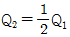
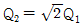
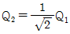
(정답률: 68%)
56. 다음 중 압력식 온도계가 아닌 것은?
- 고체팽창식
- 기체팽창식
- 액체팽창식
- 증기팽창식
(정답률: 76%)
57. 편차의 정(+), 부(-)에 의해서 조작신호가 최대, 최소가 되는 제어동작은?
- 온ㆍ오프동작
- 다위치동작
- 적분동작
- 비례동작
(정답률: 82%)
58. 정전 용량식 액면계의 특징에 대한 설명 중 틀린 것은?
- 측정범위가 넓다.
- 구조가 간단하고 보수가 용이하다.
- 유전율이 온도에 따라 변화되는 곳에도 사용할 수 있다.
- 습기가 있거나 전극에 피측정제를 부착하는 곳에는 부적당하다.
(정답률: 52%)
59. 출력 측의 신호를 입력 측에 되돌려 비교하는 제어방법은?
- 인터록(inter lock)
- 시퀀스(sequence)
- 피드백(feed back)
- 리셋(reset)
(정답률: 83%)
60. 헴펠식(Hempel type) 가스분석장치에 흡수되는 가스와 사용하는 흡수제의 연결이 잘못된 것은?
- CO - 차아황산소다
- O2 - 알칼리성 피로갈롤용액
- CO2 - 30% KOH 수용액
- CmHn - 진한 황산
(정답률: 69%)
4과목: 열설비재료 및 관계법규
61. 에너지이용 합리화법에 따라 특정열사용기자재의 설치ㆍ시공이나 세관을 업으로 하는 자는 어디에 등록을 하여야 하는가?
- 행정안전부장관
- 한국열관리시공협회
- 한국에너지공단 이사장
- 시ㆍ도지사
(정답률: 69%)
62. 에너지이용 합리화법에 따라 대기전력 경고표지 대상 제품인 것은?
- 디지털 카메라
- 텔레비전
- 셋톱박스
- 유무선전화기
(정답률: 56%)
63. 에너지법에서 정한 에너지에 해당하지 않는 것은?
- 열
- 연료
- 전기
- 원자력
(정답률: 80%)
64. 그림의 배관에서 보온하기 전 표면 열전달율(a)이 12.3kcal/m2ㆍhㆍ℃ 이었다. 여기에 글라스울 보온통으로 시공하여 방산열량이 28kcal/mㆍh가 되었다면 보온효율은 얼마인가? (단, 외기온도는 20℃이다.)
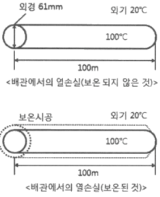
- 44%
- 56%
- 85%
- 93%
(정답률: 41%)
65. 도염식요는 조업방법에 의해 분류할 경우 어떤 형식에 속하는가?
- 불연속식
- 반연속식
- 연속식
- 불연속식과 연속식의 절충형식
(정답률: 65%)
66. 원관을 흐르는 층류에 있어서 유량의 변화는?
- 관의 반지름의 제곱에 반비례해서 변한다.
- 압력강하에 반비례하여 변한다.
- 점성계수에 비례하여 변한다.
- 관의 길이에 반비례해서 변한다.
(정답률: 49%)
67. 에너지이용 합리화법에 따라 에너지공급자의 수요관리 투자계획에 대한 설명으로 틀린 것은?
- 한국지역난방공사는 수요관리투자계획 수립대상이 되는 에너지공급자이다.
- 연차별 수요관리투자계획은 해당 연도 개시 2개월 전까지 제출하여야 한다.
- 제출된 수요관리투자 계획을 변경하는 경우에는 그 변경한 날부터 15일 이내에 변경사항을 제출하여야 한다.
- 수요관리투자계획 시행 결과는 다음 연도 6월 말일까지 산업통상자원부장관에게 제출하여야 한다.
(정답률: 55%)
68. 요로 내에서 생성된 연소가스의 흐름에 대한 설명으로 틀린 것은?
- 가열물의 주변에 저온 가스가 체류하는 것이 좋다.
- 같은 흡입 조건 하에서 고온 가스는 천정쪽으로 흐른다.
- 가연성가스를 포함하는 연소가스는 흐르면서 연소가 진행된다.
- 연소가스는 일반적으로 가열실 내에 충만되어 흐르는 것이 좋다.
(정답률: 64%)
69. 에너지이용 합리화법에 따라 에너지사용계획을 수립하여 산업통상자원부장관에게 제출하여야 하는 사업주관자가 실시하려는 사업의 종류가 아닌 것은?
- 도시개발사업
- 항만건설사업
- 관광단지개발사업
- 박람회 조경사업
(정답률: 72%)
70. 샤모트(chamotte) 벽돌의 원료로서 샤모트 이외에 가소성 생점토(生粘土)를 가하는 주된 이유는?
- 치수 안정을 위하여
- 열전도성을 좋게 하기 위하여
- 성형 및 소결성을 좋게 하기 위하여
- 건조 소성, 수축을 미연에 방지하기 위하여
(정답률: 70%)
71. 일반적으로 압력 배관용에 사용되는 강관의 온도 범위는?
- 800℃ 이하
- 750℃ 이하
- 550℃ 이하
- 350℃ 이하
(정답률: 62%)
72. 에너지이용 합리화법에 따라 가스를 사용하는 소형온수보일러인 경우 검사대상기기의 적용 기준은?
- 가스사용량이 시간당 17kg을 초과하는 것
- 가스사용량이 시간당 20kg을 초과하는 것
- 가스사용량이 시간당 27kg을 초과하는 것
- 가스사용량이 시간당 30kg을 초과하는 것
(정답률: 77%)
73. 에너지이용 합리화법에 따라 열사용기자재 관리에 대한 설명으로 틀린 것은?
- 계속사용검사는 검사유효기간의 만료일이 속하는 연도의 말까지 연기할 수 있으며, 연기하려는 자는 검사대상기기 검사연기 신청서를 한국에너지공단이사장에게 제출하여야 한다.
- 한국에너지공단이사장은 검사에 합격한 검사대상기기에 대해서 검사 신청인에게 검사일부터 7일 이내에 검사증을 발급하여야 한다.
- 검사대상기기관리자의 선임신고는 신고 사유가 발생한 날로부터 20일 이내에 하여야 한다.
- 검사대상기기의 설치자가 사용 중인 검사대상기기를 폐기한 경우에는 폐기한 날부터 15일 이내에 검사대상기기 폐기신고서를 한국에너지공단이사장에게 제출하여야 한다.
(정답률: 74%)
74. 보온재 시공시 주의해야 할 사항으로 가장 거리가 먼 것은?
- 사용개소의 온도에 적당한 보온재를 선택한다.
- 보온재의 열전도성 및 내열성을 충분히 검토한 후 선택한다.
- 사용처의 구조 및 크기 또는 위치 등에 적합한 것을 선택한다.
- 가격이 가장 저렴한 것을 선택한다.
(정답률: 83%)
75. 에너지이용 합리화법에 따라 연간 에너지사용량이 30만 티오이인 자가 구역별로 나누어 에너지 진단을 하고자 할 때 에너지 진단주기는?
- 1년
- 2년
- 3년
- 5년
(정답률: 62%)
76. 에너지이용 합리화법에 따라 연간 검사대상기기의 검사유효 기간으로 틀린 것은?
- 보일러의 개조검사는 2년이다.
- 보일러의 계속사용검사는 1년이다.
- 압력용기의 계속사용검사는 2년이다.
- 보일러의 설치장소 변경검사는 1년이다.
(정답률: 54%)
77. 다음 중 노체 상부로부터 노구(throat), 샤프트(shaft), 보시(bosh), 노상(hearth)으로 구성된 노(爐)는?
- 평로
- 고로
- 전로
- 코크스로
(정답률: 67%)
78. 다음 보온재 중 재질이 유기질 보온재에 속하는 것은?
- 우레탄폼
- 펄라이트
- 세라믹 파이버
- 규산칼슘 보온재
(정답률: 57%)
79. 열처리로 경화된 재료를 변태점 이상의 적당한 온도로 가열한 다음 서서히 냉각하여 강의 입도를 미세화하여 조직을 연화, 내부응력을 제거하는 로는?
- 머플로
- 소성로
- 풀림로
- 소결로
(정답률: 75%)
80. 에너지이용 합리화법에 따라 에너지 사용량이 대통령령으로 정하는 기준량 이상인 자는 산업통상자원부령으로 정하는 바에 따라 매년 언제까지 시ㆍ도지사에게 신고하여야 하는가?
- 1월 31일까지
- 3월 31일까지
- 6월 30일까지
- 12월 31일까지
(정답률: 78%)
5과목: 열설비설계
81. 보일러 사용 중 저수위 사고의 원인으로 가장 거리가 먼 것은?
- 급수펌프가 고장이 났을 때
- 급수내관이 스케일로 막혔을 때
- 보일러의 부하가 너무 작을 때
- 수위 검출기가 이상이 있을 때
(정답률: 70%)
82. 인젝터의 장ㆍ단점에 관한 설명으로 틀린 것은?
- 급수를 예열하므로 열효율이 좋다.
- 급수온도가 55℃ 이상으로 높으면 급수가 잘 된다.
- 증기압이 낮으면 급수가 곤란하다.
- 별도의 소요동력이 필요 없다.
(정답률: 61%)
83. 보일러 수 내의 산소를 제거할 목적으로 사용하는 약품이 아닌 것은?
- 탄닌
- 아황산 나트륨
- 가성소다
- 히드라진
(정답률: 56%)
84. 연소실에서 연도까지 배치된 보일러 부속 설비의 순서를 바르게 나타낸 것은?
- 과열기 → 절탄기 → 공기 예열기
- 절탄기 → 과열기 → 공기 예열기
- 공기 예열기 → 과열기 → 절탄기
- 과열기 → 공기 예열기 → 절탄기
(정답률: 66%)
85. 최고사용압력이 1.5MPa를 초과한 강철제보일러의 수압시험압력은 그 최고사용압력의 몇 배로 하는가?
- 1.5
- 2
- 2.5
- 3
(정답률: 56%)
86. 판형 열교환기의 일반적인 특징에 대한 설명으로 틀린 것은?
- 구조상 압력손실이 적고 내압성은 크다.
- 다수의 파형이나 반구형의 돌기를 프레스 성형하여 판을 조합한다.
- 전열면의 청소나 조립이 간단하고, 고점도에도 적용할 수 있다.
- 판의 매수 조절이 가능하여 전열면적 증감이 용이하다.
(정답률: 48%)
87. 노통 연관 보일러의 노통 바깥면과 이에 가장 가까운 연관의 면과는 얼마 이상의 틈새를 두어야 하는가?
- 5mm
- 10mm
- 20mm
- 50mm
(정답률: 63%)
88. 그림과 같이 폭 150mm, 두께 10mm의 맞대기 용접이음에 작용하는 인장응력은?
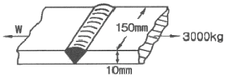
- 2kg/cm2
- 15kg/cm2
- 100kg/cm2
- 200kg/cm2
(정답률: 55%)
89. 서로 다른 고체 물질 A, B, C인 3개의 평판이 서로 밀착되어 복합체를 이루고 있다. 정상 상태에서의 온도 분포가 그림과 같을 때, 어느 물질의 열전도도가 가장 작은가? (단, 온도 T1=1000℃, T2=800℃, T3=550℃, T4=250℃ 이다.)
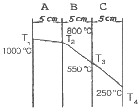
- A
- B
- C
- 모두 같다.
(정답률: 73%)
90. 다음 보일러 중에서 드럼이 없는 구조의 보일러는?
- 야로우 보일러
- 슐저 보일러
- 타쿠마 보일러
- 베록스 보일러
(정답률: 60%)
91. 보일러의 발생증기가 보유한 열량이 3.2×106kcal/h일 때 이 보일러의 상당 증발량은?
- 2500kg/h
- 3512kg/h
- 5937kg/h
- 6847kg/h
(정답률: 50%)
92. 압력용기를 옥내에 설치하는 경우에 관한 설명으로 옳은 것은?
- 압력용기와 천장과의 거리는 압력용기 본체 상부로부터 1m 이상이어야 한다.
- 압력용기의 본체와 벽과의 거리는 최소 1m 이상이어야 한다.
- 인접한 압력용기와의 거리는 최소 1m 이상이어야 한다.
- 유독성 물질을 취급하는 압력용기는 1개 이상의 출입구 및 환기장치가 있어야 한다.
(정답률: 61%)
93. 열의 이동에 대한 설명으로 틀린 것은?
- 전도란 정지하고 있는 물체 속을 열이 이동하는 현상을 말한다.
- 대류란 유동 물체가 고온 부분에서 저온 부분으로 이동하는 현상을 말한다.
- 복사란 전자파의 에너지 형태로 열이 고온 물체에서 저온 물체로 이동하는 현상을 말한다.
- 열관류란 유체가 열을 받으면 밀도가 작아져서 부력이 생기기 때문에 상승현상이 일어나는 것을 말한다.
(정답률: 68%)
94. 수증기관에 만곡관을 설치하는 주된 목적은?
- 증기관 속의 응결수를 배제하기 위하여
- 열팽창에 의한 관의 팽창작용을 흡수하기 위하여
- 증기의 통과를 원활히 하고 급수의 양을 조절하기 위하여
- 강수량의 순환을 좋게 하고 급수량의 조절을 쉽게 하기 위하여
(정답률: 61%)
95. 노통보일러에서 브레이징 스페이스란 무엇을 말하는가?
- 노통과 가셋트 스테이와의 거리
- 관군과 가셋트 스테이 사이의 거리
- 동체와 노통 사이의 최소거리
- 가셋트 스테이간의 거리
(정답률: 74%)
96. 보일러 성능시험 시 측정을 매 몇 분마다 실시하여야 하는가?
- 5분
- 10분
- 15분
- 20분
(정답률: 71%)
97. 보일러 급수처리 방법에서 수중에 녹아있는 기체 중 탈기기 장치에서 분리, 제거하는 대표적 용존 가스는?
- O2, CO2
- SO2, CO
- NO3, CO
- NO2, CO2
(정답률: 76%)
98. 보일러의 연소가스에 의해 보일러 급수를 예열하는 장치는?
- 절탄기
- 과열기
- 재열기
- 복수기
(정답률: 61%)
99. 두께 25mm인 철판의 넓기 1m2당 전열량이 매시간 2000kcal가 되려면 양면의 온도차는 얼마여야 하는가? (단, 철판의 열전도율은 50kcal/mㆍhㆍ℃ 이다.)
- 1℃
- 2℃
- 3℃
- 4℃
(정답률: 41%)
100. 보일러 안전사고의 종류가 아닌 것은?
- 노통, 수관, 연관 등의 파열 및 균열
- 보일러 내의 스케일 부착
- 동체, 노통, 화실의 압궤 및 수관, 연관 등 전열면의 팽출
- 연도가 노 내의 가스폭발, 역화 그 외의 이상연소
(정답률: 80%)